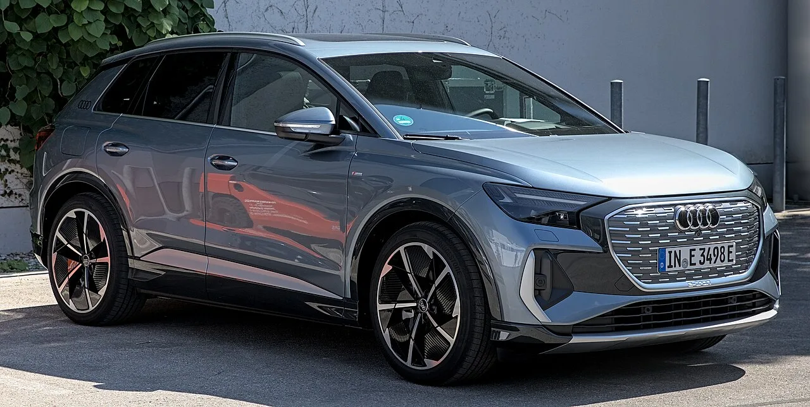
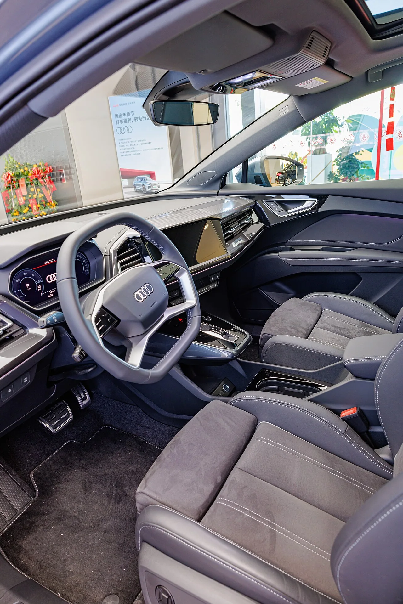
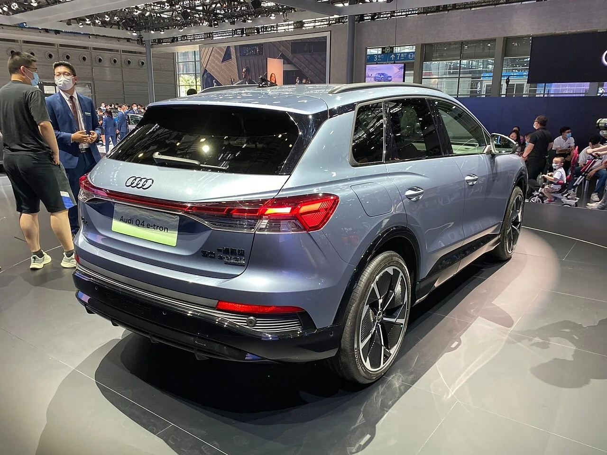

▲ 1999년 등장한 초대 아우디 A2 — 알루미늄 스페이스프레임 차체로 화제를 모았지만 높은 가격에 발목 잡혀 2005년 단종됐다
아우디 A2를 기억하는 사람이라면 이 이름이 다시 등장한다는 소식이 반가우면서도 의아할 겁니다. 1999년 나온 초대 A2는 전신을 알루미늄 스페이스프레임으로 짜 넣은 파격적인 설계로 주목받았지만, 그만큼 비싼 제조 원가가 발목을 잡아 2005년 조용히 단종됐습니다. 그 이름이 2026년 가을, 이번에는 순수 전기차로 돌아옵니다. 그것도 아우디 역사상 가장 높은 전비를 기록한 모델이라는 타이틀을 달고서입니다.
1. 왜 '효율'이 이 차의 전부인가
신형 A2 e-트론의 핵심 수치는 WLTP 기준 100km당 12.8kWh 소비량입니다. 가솔린 연비로 환산하면 리터당 약 70km에 해당하는 수준으로, 이는 단순히 "전기차치고 효율적이다"를 넘어 아우디 브랜드 역사를 통틀어 가장 높은 전비 기록입니다. 초대 A2가 알루미늄 차체로 무게를 줄여 효율을 추구했다면, 신형은 전동화 시대에 맞게 공력·배터리·전력반도체 세 축에서 동시에 효율을 끌어올리는 방식을 택했습니다.

▲ 아우디 Q4 e-트론 — A2 e-트론은 이 전동화 라인업의 막내로 합류해, 브랜드 진입장벽을 크게 낮추는 역할을 맡을 전망이다
2. 공기저항계수 0.24 — 왜 이렇게까지 다듬었나
A2 e-트론은 공기저항계수(Cd) 0.24를 기록했습니다. 아우디 콤팩트 모델 중 최저 수준입니다. 시속 100km 이상에서는 전체 에너지 소비의 절반 이상이 공기저항을 극복하는 데 쓰인다는 점을 감안하면, 이 수치는 장식이 아니라 실질적인 주행거리와 직결되는 요소입니다. 차체 표면의 굴곡, 언더바디 커버, 액티브 에어 플랩 등 공력 설계 전반에 걸쳐 세밀한 다듬질이 들어간 결과로 풀이됩니다. 아우디 측은 이런 공력 기술만으로 100km당 최대 0.9kWh의 전력 소비를 줄일 수 있다고 밝혔는데, 이는 앞서 언급한 전체 전비(12.8kWh/100km)의 7%에 해당하는 적지 않은 비중입니다.
3. 배터리는 왜 하필 LFP인가

▲ 아우디 Q4 e-트론 실내 — A2 e-트론에도 이와 유사한 전동화 브랜드의 실내 디자인 언어가 이어질 것으로 예상된다
A2 e-트론에는 61kWh 용량의 리튬인산철(LFP) 배터리가 셀투팩 구조로 탑재됩니다. LFP는 니켈·코발트 기반 배터리보다 에너지 밀도는 낮지만, 열화가 상대적으로 적어 일상적으로 100% 완충해도 배터리 수명에 부담이 적다는 장점이 있습니다. 충전 효율도 89.6%에 달합니다. 여기에 140kW(190마력) 모터에 실리콘카바이드(SiC) 전력반도체를 적용해, 부분 부하 영역(일상 주행에서 가장 많이 쓰이는 구간)의 손실을 최대 33%까지 줄였습니다. 감속기 기어비 역시 10.2:1로 세팅해 구동 시스템 전체 효율을 최대 10%까지 끌어올렸습니다. 화려한 최고출력 경쟁 대신, 실제 주행에서 체감되는 효율을 끌어올리는 데 설계 자원을 집중한 셈입니다.
4. 집을 충전소로 — V2L과 V2H

▲ 아우디 Q4 e-트론 후면부 — A2 e-트론도 동일한 전동화 라인업의 일원으로 V2L·V2H 기능을 지원할 예정이다
A2 e-트론은 외부 전자기기에 전력을 공급하는 V2L(Vehicle-to-Load)과, 가정용 에너지저장장치 역할까지 해내는 V2H(Vehicle-to-Home) 기능을 지원합니다. V2H는 초기에 독일·오스트리아·스위스 세 나라에서 우선 제공될 예정입니다. 이는 단순한 이동 수단을 넘어, 정전이나 전력 피크 시간대에 가정에 전기를 공급하는 보조 배터리로도 활용할 수 있다는 의미입니다.
5. 아직 확인되지 않은 것들
한 번 시장에서 외면받았던 이름이 20년 만에 완전히 다른 무기, '효율'을 들고 돌아옵니다. 판매량으로 증명하지 못했던 초대 A2의 숙제를, 전동화 시대의 A2가 풀어낼 수 있을지 2026년 가을 공식 공개를 지켜볼 대목입니다.